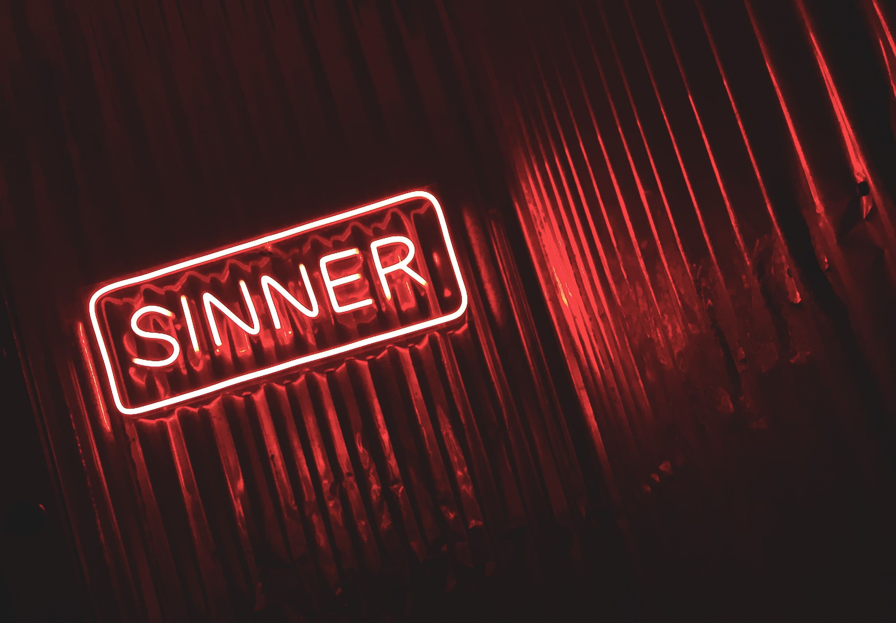
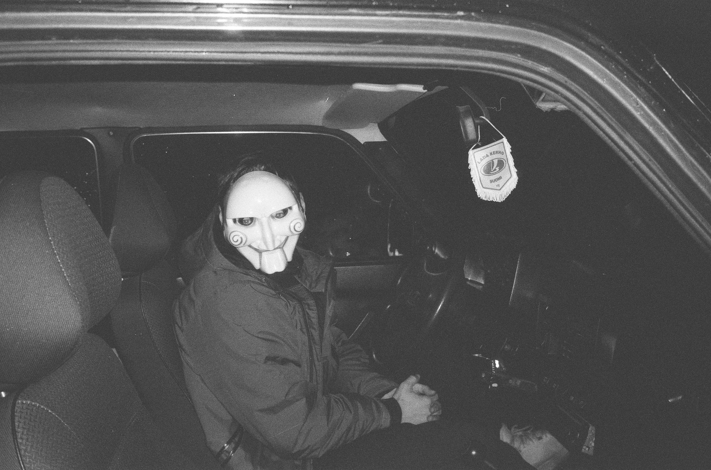
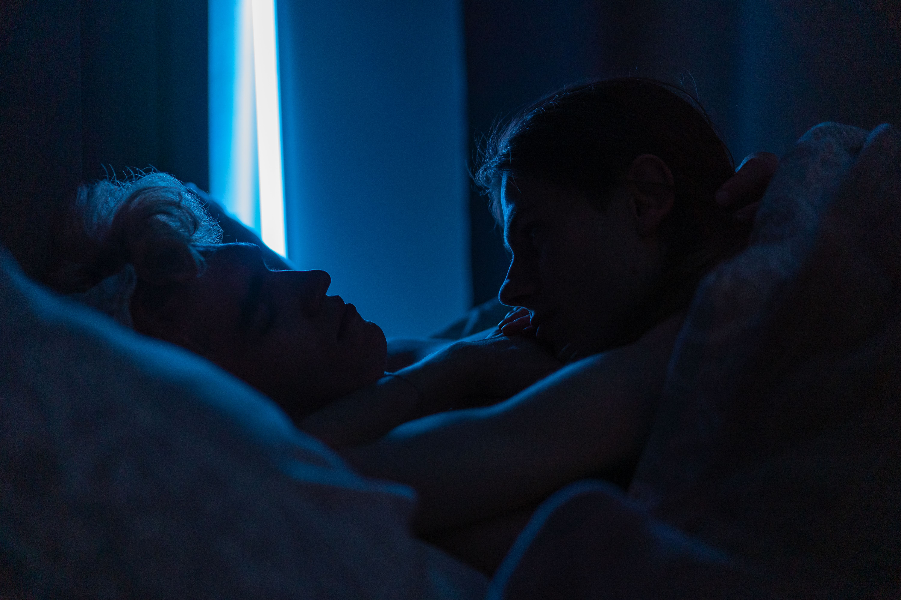

Starting off strong with director Ryan Coogler's 2025 Sinners, starring Michael B. Jordan, which earned 4 Academy Awards last year. It's my top horror movie from the storyline to the costumes, and if you love vampires and music then you'll greatly enjoy watching this with friends and family. The songs made for this movie are one of a kind, and will have you feeling each beat in your soul. Sinners is a period piece mixed with horror and slight musical elements, overall creating a masterpieve you'll never forget. It also had me question whether the bad guys were really that bad. There is a final post credit scene as well, so if you choose to watch it make sure to remain seated before it ends!
Movie Watcher by
Pexels
Jordan Peele is one of my favorite directors because of this movie. Get Out, from 2017 remains one of my favorite horror movies to this day. The storyline is so interesting, and tackles a hypothetical question of: "What if I could be someone else?". The story to me feels so different than what you could or would expect from a classic horror movie, something that's not dealing with supernatual beings or crazy concepts. Even so, there's a small ammount of comic relief from side characters, which also eases the tension created by the main story plot. Peele does a great job with mixing certain real life scenario situations and hypotheticals. In all though, the entire story and characters and all the actors did a tremendous job creating such an unsettling world for the main character and you the viewer. If you enjoy psychological thriller and a little bit of blood and gore, then Get Out would be an amazing movie to put on your watchlist!
Flower Crown by
Pexels
Midsommar has been my favorite psychological horror movie for the past few years, it came out in 2019 directed by Ari Aster. It introduced me to my favorite film genre, which is psychological horror. Personally I have always been intruiged by cults, and how one can be engulfed by them. Florence Pugh does a wonderful job as the main character, and I know it really tested her acting, and I applaud her a lot for her performance because it was breathtaking. Even though the end was horrific, you can't help but feel proud of her in the end even if she doesn't seem truly happy. The movie was actually filmed in Hungary, even though it's focused on Sweden and Swedish culture. Now, compared to the previous movie mentioned here, this one does feature more body gore and explicit scenes, so just beware of that before watching it with a group of people. There were some scenes that were unsettling not because of gore or blood, but just emotionally. However, it is a terriffic watch!

My personal favorite of the SAW franchise, released back in 2023 by director Kevin Greutert and staring the one and only Tobin Bell. If you're familiar with the SAW series, you'll understand that gore is one of the main appeals of the franchise. This one does not shy away from the horrors of being trapped in a hell hole by Jigsaw himself. The pace of the movie kicks up at the midpoint just when you believe all is well, the real action kicks in. Now, I love this movie due to the actual traps, but I also enjoy the storyline. I won't spoil it for you, but let's just say things aren't as they seem in the beginning. Along with many spine-chilling traps there's plot twists that happen before you realize it. If you're not afraid of blood and gore, this is definitely a must-watch for the Halloween Spooky season!

Finally, ending with one of my favorites, filmmaker Curry Barker's Obsession ties it all together with this 2025/2026 release. The movie first premiered at the 2025 Toronto International Film Festival before releasing to theaters back in May 2026. I can't lie, when I first heard about it I didn't know what to expect from it, so my boyfriend and I went in blind to watch it, and let me just say when we finished both of us were absoloutly in shock. It sat with me for about a week, and I couldn't sleep with the lights off. The film had a budget between $600,000 to $750,000, which could be considered an indie film, but the domestic box office generated about $260 million. Anyways, this movie will have you hugging the person next to you and gripping your toes, that's how crazy and wild it was. Absoloutly my favorite movie this year so far, and regardless of all the blood and gore it features, it also dives a little into what it feels like to be in a toxic relationship; I see it more as a metaphor. Be prepared to not be able to sleep properly if you watch it though!